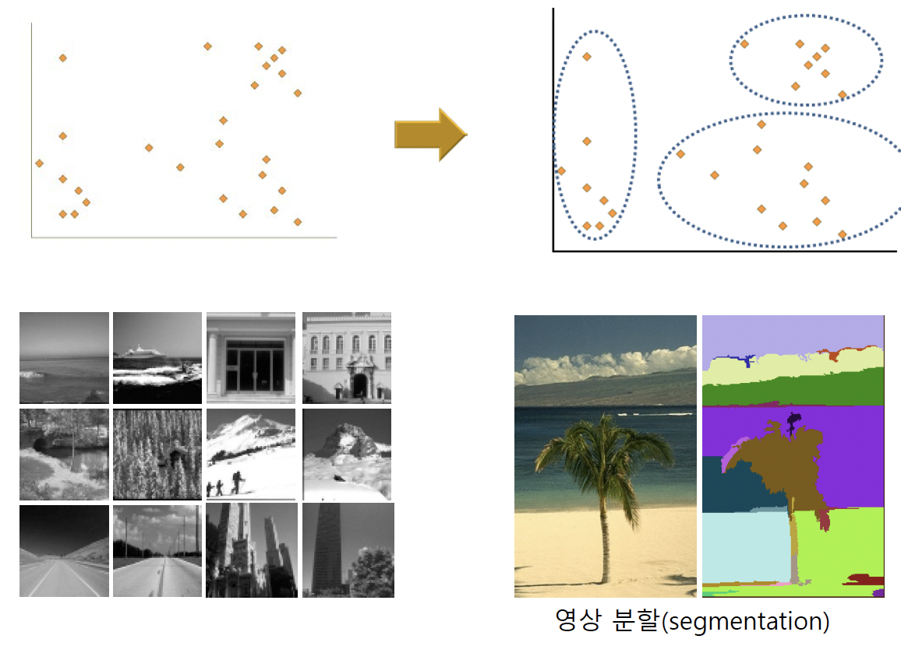

20221124
clustering (군집화)
유사성에 따라 데이터를 분할하는 것

일반 군집화 (hard clustering)
데이터는 하나의 군집에만 소속
- ex) k-means algorithms
퍼지 군집화 (fuzzy clustering)
데이터가 여러 군집에 부분적으로 소속
소속정도의 합은 1이 됨
- ex) fuzzy k-means algorithms
용도
데이터에 내재된 구조 (underlying structure) 추정
데이터의 전반적 구조 통찰
가설 설정, 이상치 (anomaly, outlier) 감지
데이터 압축 - 동일 군집의 데이터를 같은 값으로 표현
데이터 전처리 (preprocessing) 작업
성능
군집 내의 분산과 군집 간의 거리
비지도 학습 - 밀도 추정 (density estimation)
부류 (class) 별 데이터를 만들어 냈을 것으로 추정되는 확률분포를 찾는 것

용도
각 부류 별로 주어진 데이터를 발생시키는 확률 계산
가장 확률이 높은 부류로 분류
모수적(parametric) 밀도 추정
분포가 특정 수학적 함수의 형태를 가지고 있다고 가정
주어진 데이터를 가장 잘 반영하도록 함수의 파라미터 결정
전형적인 형태 - 가우시안 (Gaussian) 함수 또는 여러 개의 가우시안 함수의 혼합 (mixture of Gaussian)
비모수적(nonparametric) 밀도 추정
분포에 대한 특정 함수를 가정하지 않고, 주어진 데이터를 사용하여 밀도함수의 형태 표현
전형적인 형태 - 히스토그램 (histogram)

비지도 학습 - 차원축소 (dimension reduction)
고차원의 데이터를 정보의 손실을 최소화하면서 저차원으로 변환하는 것
목적
2, 3차원으로 변환해 시각화하면 직관적 데이터 분석 가능
차원의 저주 (curse of dimensionality) 문제 완화

차원의 저주 (curse of dimensionality)
차원이 커질수록 거리분포가 일정해지는 경향

원이 증가함에 따라 부분공간의 개수가 기하급수적으로 증가

주성분 분석 (Principle component analysis, PCA)
분산이 큰 소수의 축들을 기준으로 데이터를 사상(projection)하여 저차원으로 변환
데이터의 공분산행렬(covariance matrix)에 대한 고유값(eigenvalue)가 큰 소수의 고유벡터(eigenvector)를 사상 축으로 선택

이상치(outlier) 탐지
신규성 탐지(novelty detection)와 관련
이상치
다른 데이터와 크게 달라서 다른 메커니즘에 의해 생성된 것이 아닌지 의심스러운 데이터
관심 대상
잡음 (noise)
관측 오류, 시스템에서 발생하는 무작위적인 오차
관심이 없는 제거할 대상
점 이상치 (point outlier)
다른 데이터와 비교하여 차이가 큰 데이터
상황적 이상치 (contextual outlier)
상황에 맞지 않는 데이터
- ex) 여름철에 25도인 데이터는 정상, 겨울철에 25도는 이상치
집단적 이상치 (collective outlier)
여러 데이터를 모아서 보면 비정상으로 보이는 데이터들의 집단

부정사용감지 시스템 (fraud detection system, FDS)
이상한 거래 승인 요청 시에 카드 소유자에게 자동으로 경고 메세지 전송
침입탐지 시스템 (intrusion detection system, IDS)
네트워크 트래픽을 관찰하여 이상 접근 식별
예시
시스템의 고장 진단
임상에서 질환 진단 및 모니터링
공공보건에서 유행병의 탐지
스포츠 통계학에서 특이 사건 감지
관측 오류의 감지
반지도 학습 (semi-supervised learning)
입력에 대한 결과값이 없는 미분류 데이터 (unlabeled data)를 지도학습에 사용하는 방법
- 분류된 데이터(labeled data)는 높은 획득 비용, 미분류 데이터는 낮은 획득 비용
- 분류 경계가 인접한 미분류 데이터들이 동일한 집단에 소속하도록 학습
- 같은 군집에 속하는 것은 가능한 동일한 부류에 소속하도록 학습

반지도 학습의 가정
평활성(smoothness) 가정
가까이 있는 점들은 서로 같은 부류에 속할 가능성이 높음
군집 (clustering) 가정
같은 군집에 속하는 데이터는 동일한 부류에 속할 가능성이 높음
manifold (매니폴드) 가정
원래 차원보다 낮은 차원의 매니폴드에 데이터가 분포할 가능성이 높음